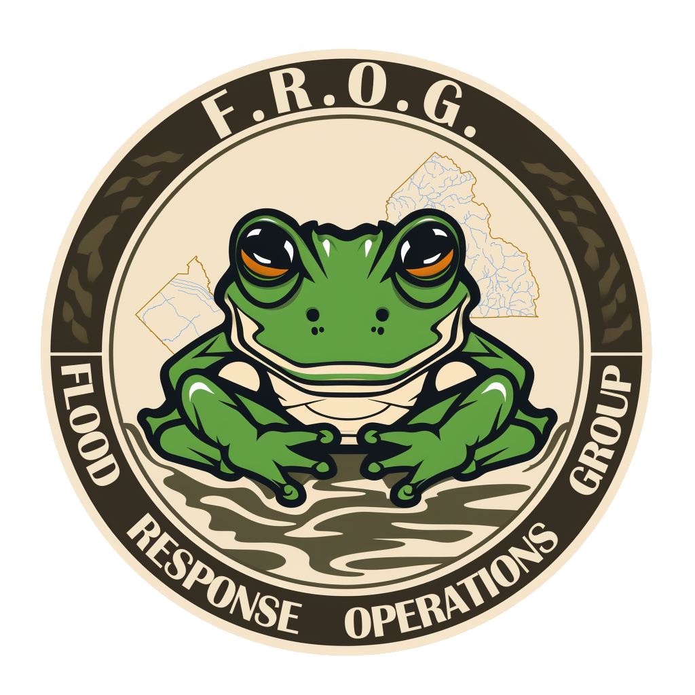

MANAGEMENT
Operational overview
No private records loaded
92 reported locations compiled November 3, 2026: seven District 1 reports and 85 OES additions. These are planning references, not current incidents, closures or verified flood extents.

Awaiting a recorded decision.
Weather alerts and gauge changes prompt review. Only a recorded, authorized decision sets the activation level.
Awaiting named-account access
Next briefing unconfirmed
Designated recorders enter the decision, who made it, when it took effect and the decision reference. County plan §5.4.1, p. 56 (PDF p. 63)
The EOC may activate as needed to support emergency operations. The plan includes an already activated local EOC requesting Operational Area support, specified combinations of local emergency proclamations, a request for or issuance of a Governor’s emergency proclamation, and nonroutine resource requests across Operational Area boundaries. County plan §5.4, p. 55 (PDF p. 62)
Identify at least three officials by title who can activate the EOC and call in staff. FEMA guide §1.1, p. 40 (PDF p. 48)
Define criteria for activation, level and operating format for planned events and unplanned incidents. For a prolonged incident, FEMA describes starting remotely or in hybrid mode and shifting in person as conditions warrant. FEMA guide §§1.3–1.4, p. 41 (PDF p. 49) and §1.4 continued, p. 42 (PDF p. 50).
Sign in to open the private exercise records. Access is limited to the workspace owner and accounts assigned to the pilot groups. Use clearly labeled exercise information while team acceptance testing is pending.
92 reported locations compiled November 3, 2026: seven District 1 reports and 85 OES additions. These are planning references, not current incidents, closures or verified flood extents.
The private exercise workspace uses county ArcGIS sign-in. An ArcGIS account alone does not grant editing access; the assigned pilot groups control which records you can add.
The fictional tabletop is separate: its entries stay in this tab and disappear on reload. Private exercise records persist in AGOL. Use clearly labeled exercise information in both while acceptance testing is pending.